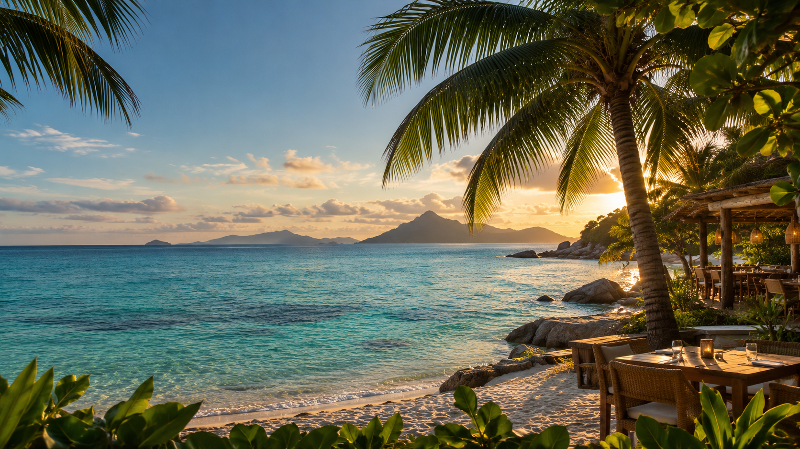

Fish Trap
Seafood, Creole cooking and island cocktails, right by the jetty in La Passe.
A family fish trap, brought back to life
In the 1980s, the Mills brothers' uncle ran the original Fish Trap on Praslin. Today the brothers have reopened it in the middle of La Passe.
The bamboo fish trap, known locally as the kazye, is still the heart of the room. You'll see it woven into the decor, set against marine blues and greens that look like the water outside.
Read our story →Food, drinks and the deck
Everything you need for a long meal or a quick drink by the sea.
The restaurant
Fresh catches from the surrounding waters, grilled fish and shellfish, plus options for different dietary needs. Ask us what came in today.
Fisherman's Bar
Signature cocktails, tropical blends and the classics, made by our bartenders and poured next to the restaurant.
The deck
Comfortable seating outside, with panoramic sea views and sunsets over Praslin.
Explore the islands by boat
Full-day island excursions from Mahé to Praslin and La Digue, with a buffet lunch right here at Fish Trap.
Come hungry, stay for the sunset
Open every day, 7:30 AM to 11:00 PM. Reserve a table on WhatsApp, give us a call, or just drop by.